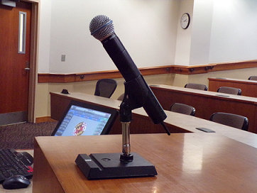

Microphones
There are three types of microphones: wireless lavalier, wireless handheld and wired handheld. The table below shows what equipment is needed to make them work.
| Wireless Lavalier | Receiver 2 Antennas XLR cable Power cord |
| Wireless Handheld | Receiver 2 Antennas XLR cable Power cord |
| Wired Handheld | XLR cable |
After I have the receiver connected to the A.V. system with the XLR cable, I make sure that the frequency from the receiver matches with the one in the microphone, otherwise I set it up by using buttons in the microphone.
Wired handheld set up only needs an XLR cable connected directly to the A.V. system. In my case, if I need to control the volume I use the touch panel. The classrooms have built-in speakers.
